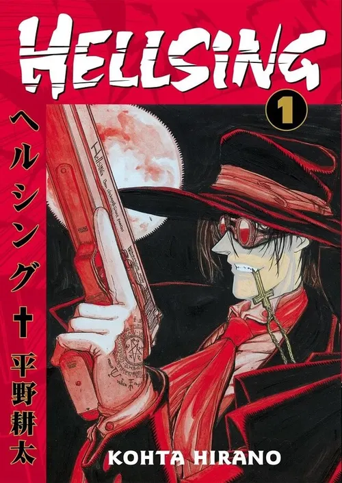

Autor: Kouta Saito
Gênero: Ação, Horror, Sobrenatural, Shonen
A agência Hellsing é um grupo dos guerreiros que proteje a Inglaterra e a igreja Anglicana de vampiros. Guiados por Integra Hellsing, a líder da lendária família Hellsing, a agência combate vampiros junto com Alucard, um vampiro renegado que luta pela humanidade. Alucard não é um vampiro ordinário, e também não é um amante dos humanos, ele possui seus próprios motivos para lutar ao lado dos humanos.